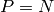
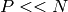
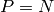
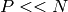
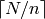
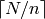
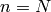
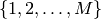
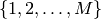
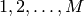

Simulations¶
Simulations are an example of task parallel routines in which a function is
called repeatedly with varying parameters. These computations are processor
intensive and consume/produce little data. The evaluation of these tasks are
independent in that there is no communication between them. With  tasks and
tasks and
 processors, if  we could run all in parallel and collect the
results. However, often  and thus we must either
processors, if  we could run all in parallel and collect the
results. However, often  and thus we must either
- Create a queue of tasks and assign the top most task on the queue to the next free processor. This works very well in an heterogeneous environment e.g. with varying processor capacities or varying task characteristics - free resources will be automatically assigned pending tasks. The cost in creating a new task can be much greater than the cost of evaluating the task.
- Partition the tasks into
 splits each containing  tasks (with the last split containing the remainder). These splits
are placed in a queue, each processor is assigned a splits and the tasks in
a split are evaluated sequentially.
splits each containing  tasks (with the last split containing the remainder). These splits
are placed in a queue, each processor is assigned a splits and the tasks in
a split are evaluated sequentially.
The second approach simplifies to the first when . Creating one split per
task is inefficient since the time to create,assign launch the task contained in
a split might be much greater than the evaluation of the task. Moreover
with in the millions, this will cause the Jobtracker to run out of
memory. It is recommended to divide the tasks into fewer splits of
sequential tasks. Because of non uniform running times among
tasks, processors can spend time in the sequential execution of tasks in a split
 with other processors idle. Hadoop will schedule the split
to another processor (however it will not divide the split into smaller
splits), and the output of whichever completes first will be used.
with other processors idle. Hadoop will schedule the split
to another processor (however it will not divide the split into smaller
splits), and the output of whichever completes first will be used.
RHIPE provides two approaches to this sort of computation. To apply the
function  to the set , the pseudo code would follow as
(here we assume returns a data frame)
to the set , the pseudo code would follow as
(here we assume returns a data frame)
1 2 3 4 5 6 7 8 9 | FC <- expression({
results <- do.call("rbind",lapply(map.values,F))
rhcollect(1,results)
})
rhmr(map=FC,ofolder='tempfolder',inout=c('lapply','sequence'),N=M
,mapred=list(mapred.map.tasks=1000))
do.call('rbind',lapply(rhread('/tempfolder', mc=TRUE),'[[',2))
|
Here is applied to the numbers . The job is decomposed into
1000 splits (specified by mapred.map.tasks) each containing approximately
tasks. The expression, sequentially applies to
the elements of map.values (which will contain a subset of )
and aggregate the returned data frames with a call to rbind. In the last
line, the results of the 1000 tasks (which is a list of data frames) are read
from the HDFS, the data frame are extracted from the list and combined using a
call to rbind. Much of this is boiler plate RHIPE code and the only
varying portions are: the function , the number of iterations  , the number
of groups (e.g. mapred.map.tasks) and the aggregation scheme (e.g. I used
the call to rbind). R lists can be written to a file on the HDFS(with
rhwrite), which can be used as i input to a MapReduce job . All of this
could then be wrapped in a single function:
, the number
of groups (e.g. mapred.map.tasks) and the aggregation scheme (e.g. I used
the call to rbind). R lists can be written to a file on the HDFS(with
rhwrite), which can be used as i input to a MapReduce job . All of this
could then be wrapped in a single function:
rhipe.lapply(function, input, groups=number.of.cores, aggregate)
where function is , input could be a list or maximum trials
(e.g. ). The parameter groups is the number of groups to divide the
job into and by default is the number of cluster cores and aggregate is a
function to aggregate the intermediate results. With this function, the user can
distribute the lapply command and rely on Hadoop to handle fault-tolerancy
and the scheduling of processors in an optimal fashion. The rhlapply
function is present to do this.
rhlapply(ll, F, ofolder,setup=NULL,readIn = TRUE, N, aggr=NULL,...)
This applies F to the elements of ll. If provided a value, it will save the results to ofolder and the results are returned as a list if readIn is TRUE. The value of N is passed to rhwrite (if ll is a list, they will be written to a temporary file). setup can be used to load files. The rhllapply command takes the arguments of rhmr (e.g. mapred) and they passed to rhmr.
A Note on Random Number Generators¶
RHIPE does not include parallel random generator e.g. Scalable Parallel Random Number Generators Library and the Rstreams package for R ([ecuyer] and [Masac]). Parallel RNGs can create streams of random numbers that are not correlated across cluster computers (i.e enforce ‘statistical independence’) and ensure reproducibility of streams for research. RHIPE can guarantee independent streams since each task has a unique identifier obtained from the environment variable mapred.task.id. Since the identifier is unique for every task it can be used to seed random number generators. This cannot be used for reproducible results. There is ongoing work to integrate parallel random generator packages for R with RHIPE.
| [ecuyer] | rstream: Streams of Random Numbers for Stochastic Simulation,Pierre L’Ecuyer and Josef Leydold, http://cran.r-project.org/web/packages/rstream/index.html |
| [Masac] | Algorithm 806: SPRNG: A Scalable Library for Pseudorandom Number Generation, M. Mascagni and A. Srinivasan, ACM Transactions on Mathematical Software, pages 436-461,volume 26, 2000 |